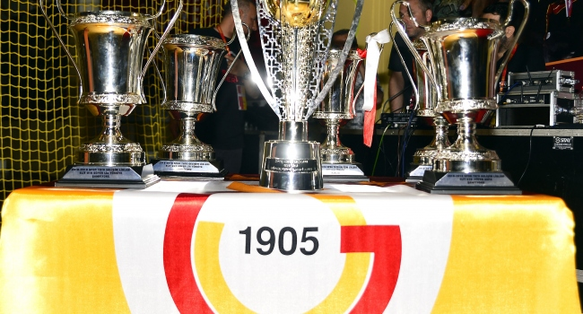

Galatasaray, 1905 yılında Ali Sami Yen ve arkadaşları tarafından, öğrenci oldukları Galatasaray Lisesi'nde kurulan kulübün ilk spor dalıdır. Şu ana kadar 22 kez Süper Lig şampiyonu olmuş, 18 kez Türkiye Kupası ve 16 kez de Türkiye Süper Kupası kazanmış; 2000 yılında da UEFA Kupası'nı ve UEFA Süper Kupa'yı kazanmıştır. Galatasaray, ayrıca Uluslararası Futbol Tarihi ve İstatistikleri Federasyonu tarafından yapılan "Dünyanın en iyi futbol kulüpleri" istatistik çalışmasında, 2000 Ağustos ayı en iyi takımı 2001 Ocak ayında ise puan sıralamasında 1. sıraya yükselerek ayın lideri olmuştur.
1905 yılında kurulan Galatasaray, günümüzde varlığını devam ettiren takımlar göz önüne alındığında ilk Türk futbol takımıdır. Bu durumun doğal sonucu ise herhangi bir futbol liginde mücadele eden ilk Türk takımı olma ayrıcalığına sahiptir. Bunda, Galatasaray Lisesi gibi bir kurumun içinden çıkmasının da payı vardır. Galatasaray, 1905-1906 sezonunda İstanbul Ligi'ne katılmış, 1907-1908'de ise şampiyonluk sevincini yaşamıştır. Yabancı takımlarla aynı ligde oynayan ve şampiyonluk yaşayan Galatasaray, yeni Türk takımlarının kurulması için de örnek olmuştur. 1911 yılında Macar Klojvar takımıyla deplasmanda yaptığı maçla da ülke dışına çıkarak ilk maç yapan takım yine Galatasaray'dır. Türk sporunun ilk teşkilatı olan Türk İdman Cemiyetleri İttifakı, yine Ali Sami Yen tarafından kurulmuştur. yıllar sonra Galatasaray Başkanlığı da yapacak olan Yusuf Ziya Öniş'in başkanlığında, 1923 yılında Şehzadebaşı'ndaki Letafet Apartmanı salonunda yapılan toplantıda "Futbol Heyet-i Müttehidesi" adıyla kurulmuştur.
Galatasaray, İstanbul merkezli bir kulüp olmasına karşın, ülke çapında büyük bir taraftar topluluğuna sahiptir. 2013 Nisan ayında Bilyoner.com'un ülke çapında yaptığı araştırma sonucuna göre Galatasaray, Türkiye'de en çok taraftarı olan ilk 3 kulüpten birisidir. Bunun dışında Galatasaray'ın organize olmuş taraftar grubu da bulunmaktadır. Galatasaray'ın ana taraftar grubu ultrAslan'dır. İsmi Avrupa'da birçok takımın tribünlerine konuşlanmış Ultras ve Galatasaray'ın sembolü Aslan kelimelerinin birleşmesinden gelmektedir. 2001'de kurulmuştur. Kısa sürede büyümüştür. Tüm taraftar grupları gibi zaman zaman yaptıkları gösterilerle gündeme gelirler. Koreografi alanında ses getiren görsel şovlar hazırlamışlardır. Bu grup dışında ise Tek Yumruk ve ForzAslan gibi taraftar grupları bulunsa da ultrAslan kulübün en önemli taraftar oluşumudur. Galatasaray taraftarının destek felsefesini ifade eden sloganı Herkes gider biz kalırız biz Galatasaraylıyız'dır. Galatasaray taraftarı maçlardan önce "Ciao Bella" şarkısının Türkçe uyarlaması olan "Destanlar Yazan" söylemektedir. Bununla birlikte "Re Re Re Ra Ra Ra", "Çıldırın Çıldırın", "Cimbom Galatasaray", "Sensiz Olmaz Galatasaray", "Yönetim Futbolcu Taraftar" ve "Warchant" şarkıları maç öncesi çalınan ve söylenen diğer şarkılardır. Galatasaray'ın gollerinden sonra ise "I Will Survive" adlı şarkı çalmaktadır.
Galatasaray, formatı 1993 yılında değişerek UEFA Şampiyonlar Ligi adını alan turnuvaya on bir defa, eski adıyla Şampiyon Kulüpler Kupasına ise dokuz defa katılmıştır. Galatasaray bu turnuvanın çeşitli turlarında toplam 131 maça çıkmıştır. 2007 yılında UEFA tarafından çıkarılan resmî şampiyonlar ligi dergisinde, turnuvanın başladığı 1959'dan beri yapılan tüm maçlar değerlendirilmiş, genel puan durumunda Galatasaray 17. sırada yer almıştır. UEFA tarafından her yıl, Şampiyonlar Ligi şampiyonu ile UEFA Avrupa ligi şampiyonunun karşılaştığı bir prestij maçı düzenlenmektedir. Kazanan takım UEFA Süper Kupası'nı kazanmaktadır. 2000 yılında da UEFA Kupası şampiyonu Galatasaray ile Şampiyonlar Ligi şampiyonu Real Madrid, 25 Ağustos 2000'de Monako'da karşılaşmış, maçı Mário Jardel'in attığı iki golle Galatasaray 2-1 kazanmıştır. Böylece Galatasaray kulüp müzesine aynı yıl ikinci Avrupa kupasını koymayı başarmıştır.
